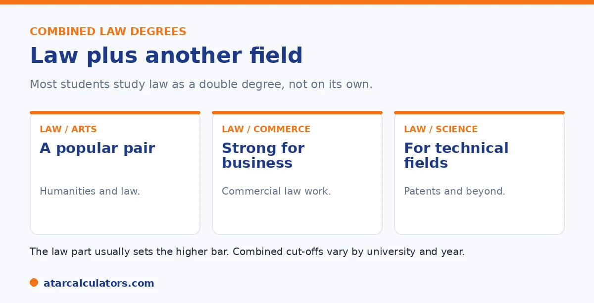

Here is the short version. Most students study law as a combined, or double, degree, such as law with arts, commerce, or science. These widen your career options without adding much time. The law part usually sets the higher entry bar. So the cut-off is close to the standalone law cut-off, and it varies by combination and university. A combined degree usually takes around five to six years.
When people picture a law degree, they often imagine law on its own. In practice, most students do a combined degree, which changes how the ATAR works.
Below is how combined law degrees and their cut-offs work. To explore your options, use our law ATAR calculator.
Key takeaways
- Most students study law as a combined degree.
- Common pairs are law with arts, commerce, or science.
- The law part usually sets the higher entry bar.
- Cut-offs vary by combination and university.
- A combined degree usually takes five to six years.
- Combined degrees widen your career options.
What combined law degrees are
A combined, or double, law degree pairs law with another field. Common combinations are law with arts, law with commerce, and law with science. You graduate with both qualifications.

The appeal is breadth. A combined degree lets you study a second field that interests you, or that supports a career direction, while still qualifying in law.
How the ATAR works for a combined degree
Here is the key point on cut-offs. In a combined law degree, the law part usually sets the higher entry bar. So the cut-off tends to be close to the standalone law cut-off at that university.
That means pairing law with a lower-demand second field does not usually lower the bar much, because law drives the requirement. The cut-off still varies by combination and university, so check each one.
There is a useful strategic angle here. Because the law component sets the entry bar, the second discipline is often something you can add for interest at little extra cost in ATAR. A student aiming for, say, Law and Arts will usually face a cut-off very close to the standalone Law figure at that university. Gaining a full second major in politics, languages or criminology. This is why combined degrees are so popular. You broaden your qualifications and career options without needing a materially higher ATAR than law alone would demand. The exception is when the second field is itself highly competitive, such as certain commerce or biomedical streams, in which case whichever component is more in demand can lift the combined cut-off. As a rule of thumb, check both the standalone law cut-off and the combined cut-off at each university. If they are close, the second degree is effectively a free addition, and if the combined figure is noticeably higher, the second field is the one driving it.
Popular combinations
Some combinations are especially common. Law with arts is popular for its flexibility and breadth. Law with commerce suits students aiming at commercial or corporate law. Law with science can support careers in areas like patents or technology law.
The right combination depends on your interests and career plans. Each pairing shapes your options after graduation, so it is worth thinking about beyond just the ATAR. See our law ATAR guide.
Want to see your realistic law options?
Try the law ATAR calculator →How long they take
A combined law degree usually takes around five to six years, compared with about four for a standalone law degree. So you gain a second qualification for an extra year or so, rather than two full degrees back to back.
For many students, that is good value: two degrees, broader options, and not much extra time. Weigh the extra year against the benefits of the second field.
Are combined degrees worth it?
For most law students, yes, which is why they are the norm. A combined degree widens your career options and lets you pursue a second interest, without committing to two separate degrees.
The main trade-off is the extra year or so. If you are confident in law alone and want the fastest route, a standalone degree works. Otherwise, a combined degree is a popular, flexible choice. See our guide on the lowest ATAR for law.
It comes down to what you want from your degree. A combined degree pays off if you value flexibility. The second discipline can steer your career (commerce towards corporate law, arts towards policy or human rights, science towards patent and technology law). And it gives you a fallback qualification if you decide against practising. The cost is time and a heavier load. This is because you are genuinely completing two sets of requirements, usually in five years rather than three or four. A standalone law degree suits students who are certain about law, want to finish sooner, or plan to add breadth later through electives or postgraduate study. In career terms, employers do not treat a standalone LLB as lesser. The practising qualification is the same. So the honest answer is that combined degrees are worth it for the flexibility and the second field, not because they make you a better lawyer or lift your admission chances. Choose based on whether that flexibility is worth the extra year to you.
Single versus combined: which to choose
Whether to choose straight law or a combined degree depends on your interests and goals. A combined degree, such as Law with Arts, Commerce or Science, broadens your knowledge and can open more career options, at the cost of extra time.
A single law degree is more focused and usually shorter. Neither is better in general: the right choice depends on whether the second discipline genuinely interests you and supports where you want your career to go.
Many students choose combined degrees precisely for that breadth. But if you are certain law is your focus, a single degree gets you there sooner, so weigh the extra years against the extra options.
Where combined degrees lead
Combined law degrees suit students who want to work at the intersection of law and another field. Law with Commerce can lead toward corporate or financial work; Law with Arts toward policy, government or international areas.
The second discipline can shape your career and make you distinctive. So choose it with your goals in mind, since a combined degree is most valuable when the two halves genuinely complement the direction you want to take.
How cutoffs compare
Combined law cutoffs are often similar to straight law at the same university, sometimes a little different depending on demand for the particular combination. The law component tends to drive the cutoff either way.
So a combined degree is not necessarily easier or harder to enter than single law. Check the specific cutoff for the combination you want, as it can vary between pairings even at the same university.
Transferring between them
Many universities allow students to transfer between single and combined law, or to add or drop the second degree, subject to their rules. So an initial choice is not always final.
If you are unsure, this flexibility is reassuring: you can often adjust once you have experienced the study. Check each university’s transfer rules, since the ease of switching varies.
A law degree is the first step, not the last
Finishing a law degree, combined or single, is the first step toward becoming a lawyer, not the end of it. To practise, you also need practical legal training and formal admission to practice in your state.
So a combined law degree opens the door, but there are further steps afterward. Many graduates also use their law degree in fields outside legal practice, where the skills it builds are widely valued.
Combined undergraduate law or a later JD
There are two main routes into law. You can study an undergraduate combined law degree straight from school, or complete another degree first and then a graduate Juris Doctor.
So you do not have to decide everything at seventeen. A combined degree suits students set on law early, while the graduate route suits those who want to study something else first, then move into law afterward.
Common questions
What ATAR do you need for a combined law degree?
It is usually close to the standalone law cut-off at that university, since the law part sets the higher bar. So at a top university it is in the high 90s, while many others are far lower. It varies by combination and university.
Are double degrees harder to get into?
For law, not usually harder than law alone, because the law part drives the cut-off. Pairing law with a lower-demand field does not lower the bar much. The requirement still varies by combination and university.
What are popular law combinations?
Law with arts is popular for flexibility, law with commerce suits commercial or corporate careers, and law with science supports areas like patents or technology law. The right one depends on your interests and career plans.
How long is a combined law degree?
Usually around five to six years, compared with about four for a standalone law degree. So you gain a second qualification for roughly an extra year, rather than studying two full degrees one after the other.
Does the second field lower the ATAR needed?
Not usually. In a combined law degree, the law part sets the higher entry bar. So pairing it with a lower-demand field does not lower the cut-off much. The requirement is driven by law at that university.
Explore combined law degrees
See realistic pathways into law based on your ATAR. Free, and no signup.
Open the law ATAR calculator →Related guides
This guide is general information for students and parents, not formal admissions advice. ATAR cut-offs, degree structures and entry rules vary by university and change every year. The LSAT applies only to some postgraduate JD programs, not undergraduate law. Any figures here are approximate and based on recent years. So always confirm the current details with each university and your state admissions centre (such as UAC, VTAC, QTAC, SATAC or TISC). Reviewed by the ATARCalculators Editorial Team.